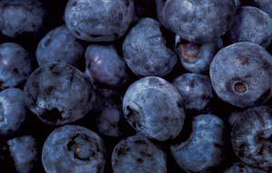
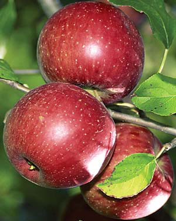

Make Delicious, Low-Sugar Jams And Jellies
With these simple ingredients you can make naturally sweet, low-calorie preserves.
June/July 2006
June/July 2006
By Roberta Bailey
The first time I made my own jam, I was shocked to find that the recipe called for more sugar than fruit. When I tried to reduce the sugar in the recipe, I ended up with a thin syrup instead of the thick, fruity jam I had envisioned.
As I learned more about making preserves, I found out that pectin, a carbohydrate derived from fruit, is what causes jams and jellies to thicken, and it works best when a substantial amount of sugar is included in the recipe.
But one type of pectin, low-methoxyl pectin, thickens jams and jellies with little or no sugar. This pectin makes it possible to create jams and jellies sweetened with honey, artificial sweeteners, the herbal sweetener stevia, or just with fruit. It’s even easier to make low-sugar fruit “butters,” such as peach or apple butter, because these are made without any added pectin at all (see Low-Sugar Fruit Butters).
Like many foods these days, homemade jams and jellies often taste much better than store-bought. You can find good buys on quantities of fruit from local growers - check your farmer’s markets and classified ads. And if you’re too busy to make preserves when the fruit is ripe, you can freeze it and process it later when time is not at such a premium.
How Pectin Works
Both jellies and jams are made with sugar and pectin: The difference is that jelly is made with fruit juice, while jams are made with crushed or mashed fruit.
With most fruit pectin, recipes must include 55 percent to 85 percent sugar to allow the interaction among pectin, sugar and fruit acids that causes jams and jellies to thicken properly. That type of pectin is derived from ripe fruit, but low-methoxyl pectin is extracted from citrus peel and thickens when you add calcium phosphate. It was popularized in the early 1960s by naturalist Euell Gibbons, after his diabetic brother began experimenting with it to make jams and jellies with less sugar.
Low-methoxyl pectin is now available from most health food stores and some supermarkets. It’s sold in small packets that include calcium phosphate powder and will make up to 18 cups of jam or jelly - it’s also sold in bulk; one source is Pomona Pectin. I like to follow the simple formula for using this pectin found in Carol Hupping Stoner’s 1977 book, Stocking Up, but you will also find a detailed instruction sheet inside the package. Although some references advise making several small batches, I have had excellent results making batches up to 30 cups at a time.
The Ingredients
Whatever type of fruit you work with, here are the basic ingredients you will need:
Low-methoxyl pectin. For jams, use one-half to three-fourths teaspoon of pectin for each cup of mashed fruit. For jellies, use three-fourths to 1 teaspoon pectin for each cup of fruit juice.
Calcium phosphate solution. Mix a half teaspoon of the calcium powder with 1 cup of water to make a calcium solution. For each cup of fruit or juice, you will need 1 teaspoon of calcium solution.
Lemon juice. For low-acid fruits, such as sweet cherries, peaches or plums, add 1 tablespoon lemon juice for each cup of fruit or juice to enhance flavor and thickening ability.
Sweeteners. For each cup of fruit or juice, I would recommend one-fourth to one-half cup of sugar, or one-eighth to one-third cup of honey, but you can adjust the amount of sweetener to taste.
For artificial sweeteners, such as Splenda, and for stevia extracts, follow the product directions to find out how much to use in place of sugar.
The Process
1. Prepare the fruit or juice. Berries can be mashed and simmered, then put through a sieve to remove some of the seeds, if desired. For jelly, simmer the fruit, then place it in a jelly bag and allow the juice to drip into a bowl. You also can use prepared or frozen juices. Measure the fruit for jam or the juice for jelly, and then place it in a stainless steel, heavy-bottomed pot. If you are using low-acid berries or fruit, add the lemon juice. Bring the fruit or juice to a boil.
2. Mix the pectin with the sweetener. Pectin shouldn’t be added directly to your fruit or juice, because it will stay clumped together. If you are using sugar or honey, mix the pectin with the sweetener until there are no lumps or pockets of pectin.
To use artificial or herbal sweeteners, prepare the fruit or juice the same way, but incorporate the pectin by blending it with three-fourths cup of boiling water for one to two minutes, then stir it into the fruit or juice. If you are using only fruit without additional sweeteners, follow the same method, blending pectin into three-fourths cup boiling water, fruit juice or apple cider.
3. Pour the pectin and sweetener mixture into the fruit. Do this as the fruit is slowly boiling, stirring it thoroughly. I use a whisk to make sure the pectin doesn’t clump. Return the pot to a full boil that can’t be stirred down.
4. Add the calcium solution to the pot. This should be done quickly, because prolonged boiling of the pectin weakens it. For each cup of fruit or juice, add 1 teaspoon of calcium water. Be sure the calcium powder is fully dissolved.
5. Let the jam or jelly cool. Once the calcium solution is added, stir thoroughly and remove the jam or jelly from the heat. The preserves will thicken as they cool.
At this point, you can test the jam or jelly’s thickness. Let a spoonful of the jam or jelly cool on a cold spoon or plate. If the cooled jam or jelly is too thin, add more calcium solution, 1 teaspoon at a time, and retest. If it seems too thick, add some juice, a half cup at a time and retest.
Freezing and Canning
Jams and jellies can be used right away, or they can be frozen or canned. To can, fill hot, sterile canning jars to a half inch from the top. Screw on two-piece lids and place in a boiling water bath for five minutes. Remove the jars from the water and let them cool, then check the seal. (For more on canning, read “Learn to Can for Homegrown Flavor,” August/September 2005.) To freeze jam, place it in small freezer containers or wide-mouth jelly jars, let cool and place covered jars in freezer.
Because of their high fruit content, these preserves must be refrigerated once opened or removed from the freezer, and they will keep for two to three weeks. If jam separates, stir it to mix the layers upon opening. Sometimes a small pool of moisture collects in the recesses of a partially used jar of jam. This has to do with the calcium. I either pour off the liquid or stir it into the jam.
Low-Sugar Fruit Butters
Making low-sugar fruit butters is even simpler than making low-sugar jams and jellies, although it takes more time. Fruit butters are simply puréed fruit that is cooked down to a thicker consistency. Fruits or berries can be cooked until soft, with or without the skin, then put through a sieve to remove seeds and skin. Spices or lemon juice can be added to the purée for extra flavoring. The purée then needs to be cooked down, essentially concentrated until thick. It can be cooked down on the stovetop in a nonreactive stainless steel pot, but it must be stirred constantly.
My favorite method is to spread the purée 1 to 2 inches thick in stainless steel or glass baking pans. Place these in a low-heat oven, about 200 degrees. The purée will slowly concentrate and thicken. Stir every hour or so.
To test the thickness of fruit butter, place a spoonful on a plate and let it cool a few minutes. If a ring of liquid forms around the butter, then it needs to concentrate further. Once it is done, taste for sweetness. The fruit sugars alone may be sweet enough. If not, add sweetener to taste and bake more if needed. A little lemon juice can add a nice zip to low-acid fruits, such as apple or peach. Hot fruit butters can be canned the same way as jam or jelly. Take care to remove air bubbles from the butter as you fill the jars.
Blueberry Jam
2 quarts blueberries, rinsed and drained
3 tbsp lemon juice (optional)
2 tsp pectin powder
1/2 to 1 cup honey, or 1 cup sugar
1/2 tsp calcium powder
Cook and mash the berries, making 4 cups mashed purée. Add lemon juice if desired. Stir the pectin powder into the sweetener, mixing well. Make a calcium solution by mixing 1/2 teaspoon calcium powder with 1 cup of water. Bring fruit to a boil that cannot be stirred down. Add the sweetener, whisking it into the boiling berries. Return to a boil. Add 4 teaspoons calcium solution. Stir well. Pour into hot sterile jars. Seal and can or freeze. Makes 4 to 5 cups jam.
 CORBIS With these simple ingredients, you can make naturally sweet, low-calorie preserves. |
 DAVID CAVAGNARO Crab apples make a delicious homemade jelly. |
 DYNAMIC GRAPHICS/JOHN FOXX IMAGES Easy Blueberry Jam |
|
 LIQUID LIBRARY For an easy, nutritious apple butter, core the apples but leave the skins on, then put them through a food processor before cooking. |
|
|